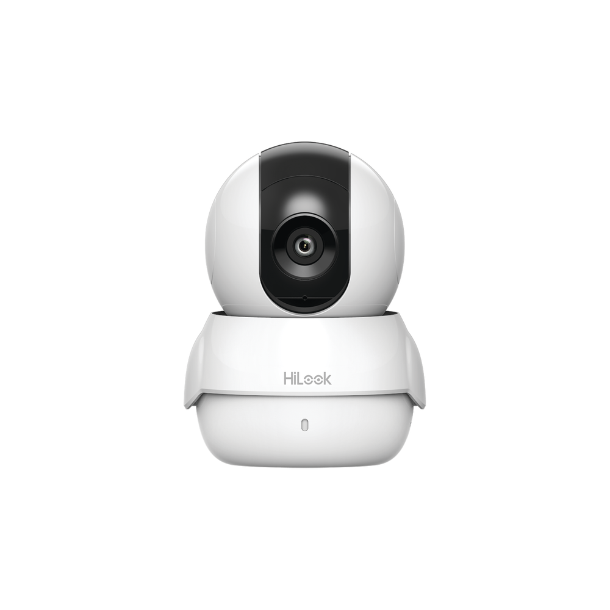

Mini PT IP 1 Megapíxel / 5 mts IR / Wifi / Compatible con Hik-Connect / Uso Residencial / Audio de Dos Vías / Memoria Micro SD

$1,323.83
Características Principales:
Resolución máxima: 1280 x 720 (1 Megapíxel).
Iluminación mínima: color 0.01 Lux @ (F1.2, AGC ON).
Iluminación mínima: B/N 0 Lux con IR.
Día / Noche Real (filtro ICR).
Distancia focal: 2.8 mm (angulo de apertura 105.8º).